DISCLAIMER! To see highlights, type ctrl + f or cmd + f (Mac), then type "HIGHLIGHT". Images may be AI-generated.
Work Experience
HIGHLIGHT
N + 1 Research Institute, College of Computing & AI, University of Wisconsin-Madison
Summer of AI Lab (SAIL) Undergraduate Research Intern
Working on AI-related project. My team and I are currently developing a fintech application that utilizes AI to provide personalized financial advice and investment strategies. The project aims to leverage machine learning algorithms to analyze user data and market trends, offering tailored recommendations for financial planning and investment decisions. My responsibilities throughout this summer include:
- Developing data extraction and preprocessing scripts from SEC API using Python.
- Providing authentication layer using Node.js.
- Initializing deployment processes for the fintech application using Docker.
- Conducting research on RAG architectures by comparing different approaches; Naive RAG, Advanced RAG, Modular RAG, GraphRAG, and Agentic RAG.
- Conducting research to analyze benefits of the application compared to traditional analytic tools.
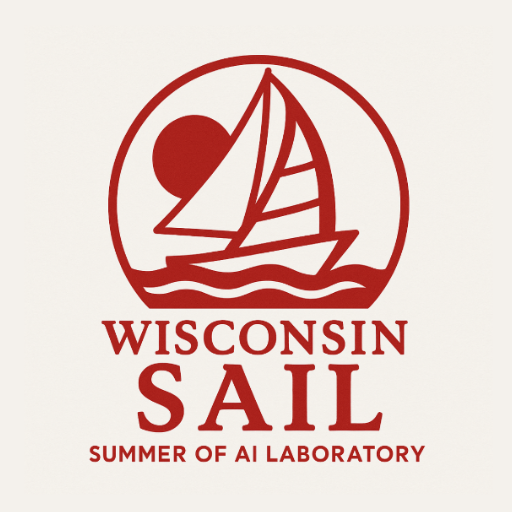
HIGHLIGHT
International Sibling Society
Data Analyst Intern
Currently working as an undergraduate intern for a non-profit organization focusing on sustainable development goals (SDGs). Responsibilities throughout this summer include:
- Created data visualizations and regression analysis using Python, Power BI, and Claude AI Tools.
- Conducted SDG research and KPI analysis to support strategic decision-making.
- Contributed to weekly discussions and strategy sessions.
- Monitored platform performance metrics & provide suggestions for future platform.
- Collaborated with module leads to set data-driven goals and track progress.
- Prepared data visualizations and presentations for general meetings and reports.

Facilities Planning & Management Division, University of Wisconsin-Madison
Student Help at Human Resources Department
Worked as a student assistant. Tasks include:
- Filing Employee-Related paper documents
- Filing Employee-Related documents using perceptive content and workday
- Managing the Front Desk
- Organizing & managing files
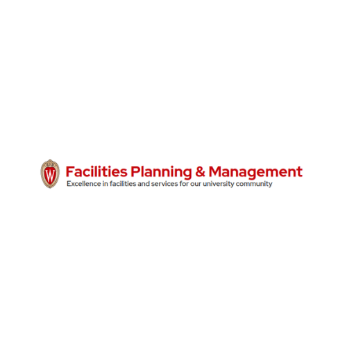
Der Rathskeller, Wisconsin Union
Restaurant Team Member
Worked as a team member. Tasks include:
- Working in a restaurant team, providing food & beverages, and excellent customer services
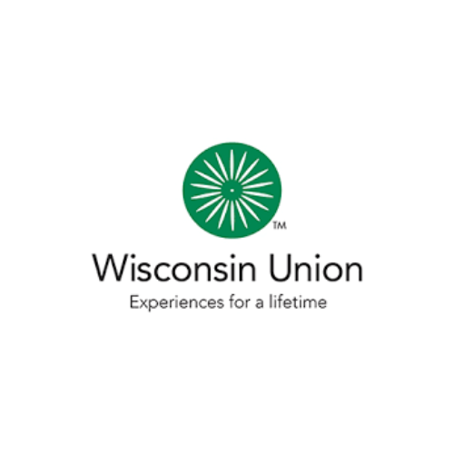
Projects
VCAIST - Vibe Coder AI Assistant
Developed an AI-powered coding assistant that provides information and guidance to users with little to no programming experience. The project was built for the OpenAI Build Week 13 - 21 July 2026, using Codex, GPT 5.6-Sol Ultracode. The tools, frameworks, and technologies used in this project include: Python, TypeScript, JavaScript, Node.js, and React, and multiple LLM APIs.
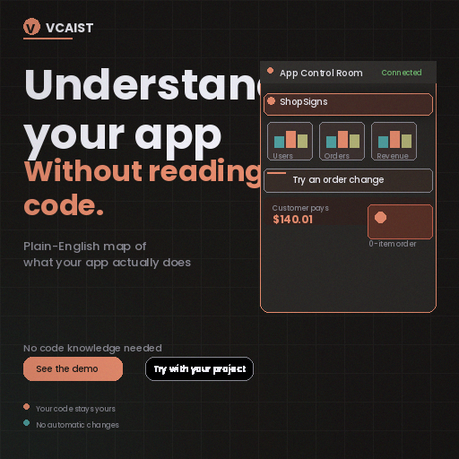
HIGHLIGHT
SafeSight
Won the second place in the Spatial Intelligence Ideathon, a competition that challenges participants to develop innovative solutions using the existing AR technology and ZaiNar tracking technology. My team developed SafeSight, addresses production safety in semiconductor facilities. The system utilizes AR technology to provide real-time safety alerts and guidance to workers, enhancing their awareness of potential hazards in the production environment and guide them towards safety.
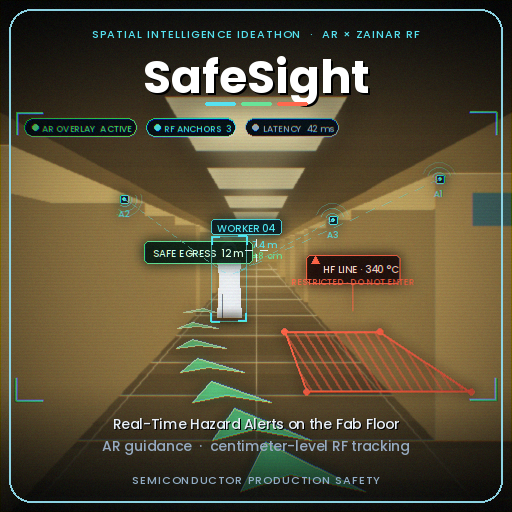
AI-based Claim Analyzer
Built a system that verifies visual evidence for damage claims across three object types: cars, laptops, and packages. The project was built for the Hackerrank Orchetrate June Hackathon. The tools, frameworks, and technologies used in this project include: Python and Claude API.
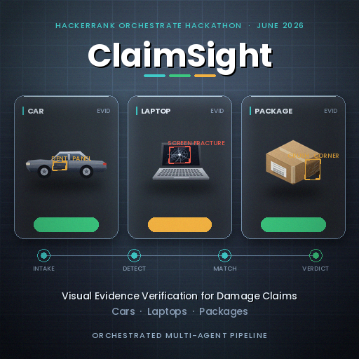
MATE - Multilingual Agent Tactical Explainer
Built a multilingual agent tactical explainer for the IBM June AI Builders Challenge. Also inspired by the 2026 World Cup, this project is the continuation of the MlangCast project. The agent also include a small vision model that can detect small moments. The challenge theme addressed are:
- Understanding & Explanation — AI match explainers, tactical shift analysis.
- Fan & Learning Experiences — personalized multilingual World Cup companion, "teach me the game" assistant.
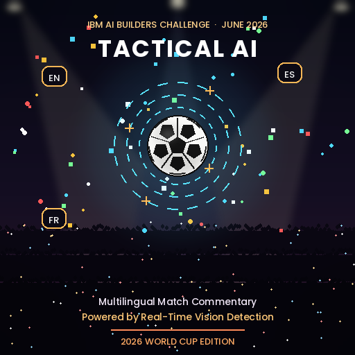
MlangCast - Multilingual AI Football Commentary
Developed a multilingual AI football commentary system for the Google Cloud Rapid Agent Hackathon. Inspired by the 2026 World Cup, the project aims to bridge the gap between existing commentary and the need for multilingual explanations of tactical decisions in football matches. The challenge theme addressed are:
- Understanding & Explanation — AI match explainers, tactical shift analysis.
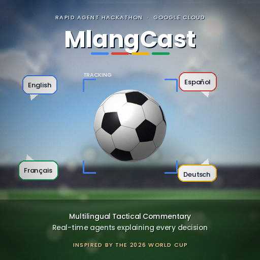
Race-Engineer-AI-Assistant, IBM AI Builders Challenge
Developed an AI-powered solution that improves team racing for the IBM AI Builders Challenge. The focus area I chose is: Performance Insights. The platform aims to help race engineers process information and provide insights to make key decisions during a race. The tools, frameworks, and technologies used in this project include: IBM Granite, Langflow, Python, React, Node.js, FastAPI, and FastF1 data.
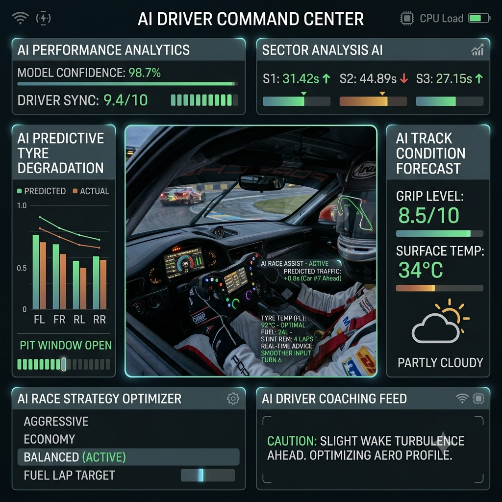
Terminal-based AI Agent, Hackerrank Hackathon Project
Developed a terminal-based AI agent for a coding competition. The project was built using Python and Claude API, and it was designed to assist users if they have any questions related to using Claude, Visa, or Hackerrank. The tools, frameworks, and technologies used in this project include: Python and Claude API. Specifically, the program was made using the principles of TF-IDF, not collecting user's data, and providing accurate information to users. The AI model used for the project is Claude sonnet 4.6.

House of Hope Website Redesign, Badger for Good Designathon
Redesigning a hard-to-navigate website for a non-profit organization for a UX Design Competition. Following the competition, I developed a new website for the organization. The tools and technologies used in this project include: Figma, HTML, CSS, and JavaScript.

Hyperstition for Good Writing Competition
Developed a paper for the Hyperstition for Good Writing Competition. The idea behind hyperstition is the research that suggest that writing about AI reasoning with compassion can actually shape how future AI behaves. In other words, we can help influence how AI treats life.

Proximity Match, Claude Builder Club (CBC) Anthropic x College of Computing and Artificial Intelligence
Building an application to help students find their best match for friends, project partners, and other academic collaborations. The project was made using the idea that students may feel uncomfortable to initiate conversations with strangers, but they may be more comfortable to start conversations if they know that they have something in common and if they know they are located within a reasonable distance. The tools, frameworks, and technologies used in this project include: Python, HTML, Javascript, Shell, Vercel, and Claude.
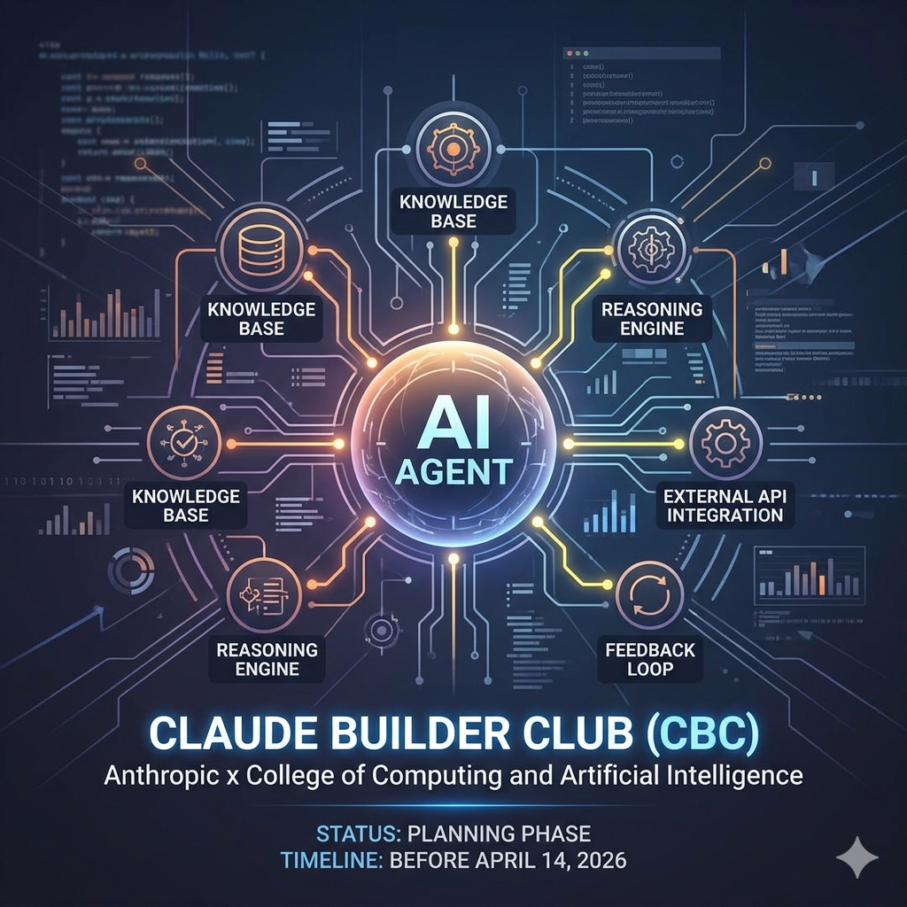
HIGHLIGHT
Synchronized Applications Recommender Knowledgebases, Codex Creator Challenge
Recognized as one of the top projects in the Handshake x OpenAI Codex Creator Challenge. I Developed an application intended to address the problem when people don't know what they want for the Handshake x OpenAI Codex Creator ChallengeThe tools, frameworks, and technologies used in this project include: OpenAI Codex, OpenAI API, React, Node.js, Express.js, Figma, Canva, and Model Context Protocol (MCP).
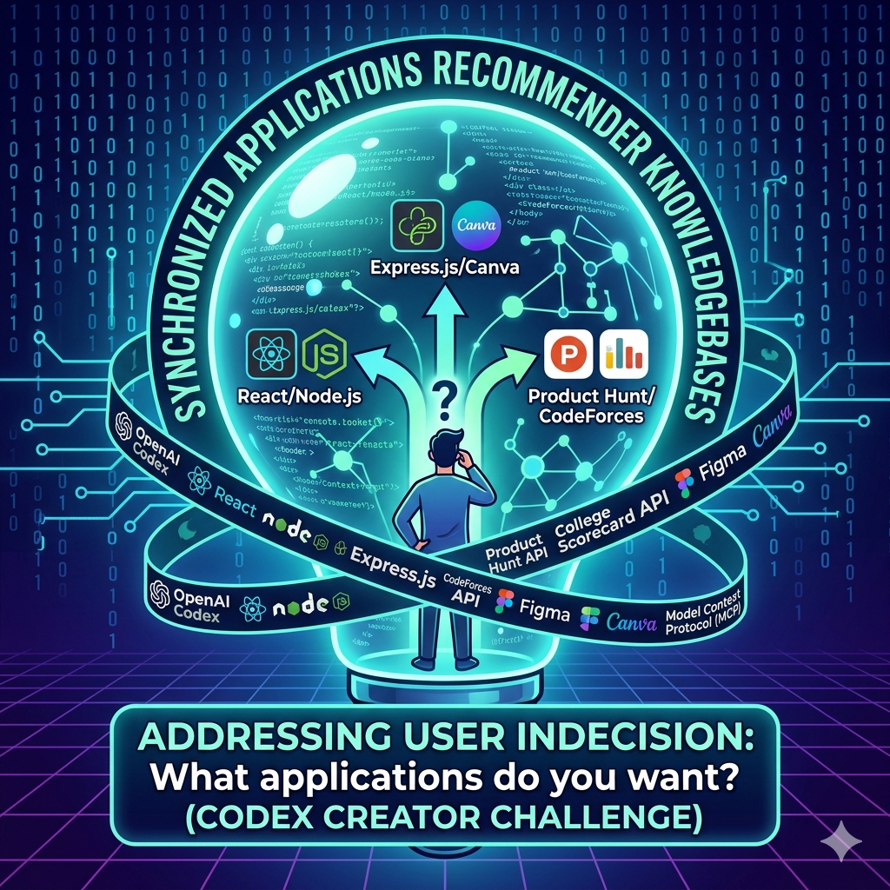
Personal AI Agent: Daily Quest AI Agent
Developed a Personal AI Chatbot Agent using Langchain, React framework for the Single Page Application (SPA), node.js, Express.js, MongoDB for storing data, and FastAPI, Langchain, and OpenAI for the LLM implementation. The tools, frameworks, and technologies used in this project include: OpenAI API, Langchain, React, Node.js, Express.js, MongoDB, and python FastAPI
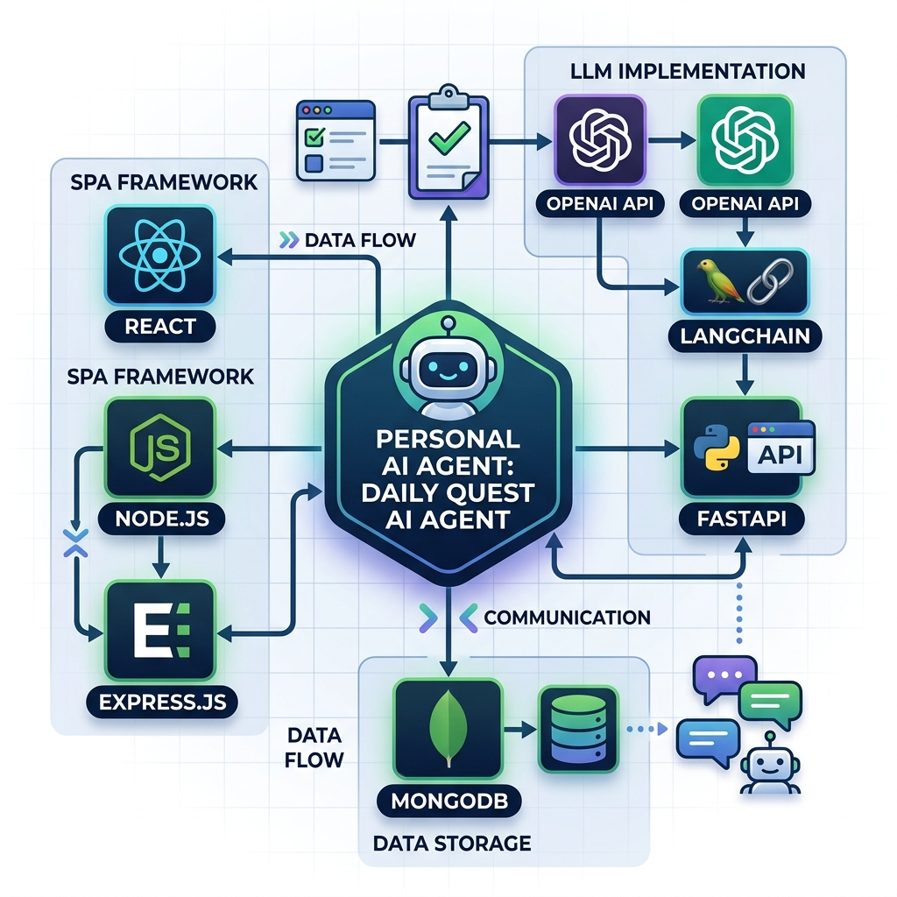
Personal AI Agent: Morning Briefing AI Agent
Developed a Personal AI Agent to brief my morning with motivation and list of tasks. While I could have just used google calendar and weather app, I wanted to create an AI agent that can integrate information from multiple sources and provide a concise briefing. The project is also beneficial for me to learn how to build an AI agent and how to integrate multiple APIs together. The tools, frameworks, and technologies used in this project include: OpenAI API, Model Context Protocol (MCP) framework, Google Calendar API, and Weather API.
Badger Solar Racing: Race Strategy Team
Working in a subteam of badger solar racing, the goal of the team is to optimize the usage of car's battery to maximize the car's potential. I worked on: Implementing Isolation Forest algorithm to detect outliers in the car's sensor data.
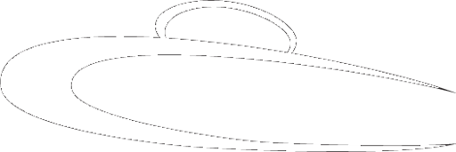
UW-Madison Deliberation Dinners Project
An initiative that brings together UW-Madison undergraduates with diverse ideological perspectives to deliberate on important political issues.
I found this experience to be useful and exciting because not only we get to talk about wide variety of political issues. It also changed my view on how I approach things, meaning to not only standing between "yes" or "no situation", but to actually have a clear standing and idea on where I want to be in this topic. This experience also taught me how I can improve quality of discussions by bringing up one topic over another and how we can further develop a discussion topic when everyone seems to be in a concensus.
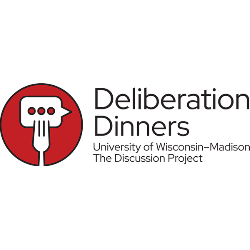
Personal Website
This website is built using HTML and CSS, alongside Visual Studio Code, Github, and Netlify. It showcases my background, favorite quotes, projects, work experience, and extracurricular activities.
Project Management: Your Best Choice University Using Multi-Attribute Decision Process
Developed a comprehensive project management paper for selecting the best university based on multiple attributes and decision-making criteria. Worked under Dr. Paul D Giammalvo

Extracurricular Activities
BlueDot AI Safety Impact AGI Strategy Course
Participant
Studying what it takes to drive AGI into something useful and not harmful for humanity
Certification:
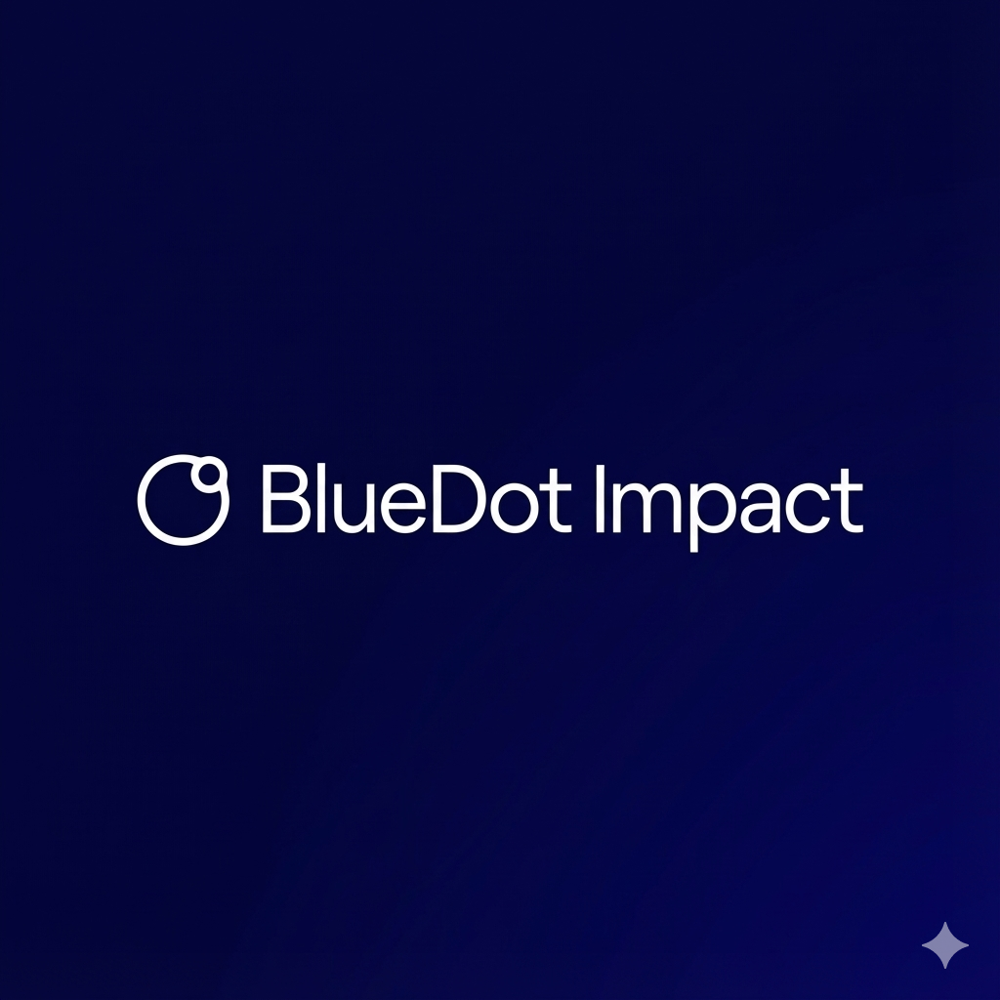
Wisconsin AI Safety Initiative (WAISI)
Technical Team Member
Working together to improve AI Safety. Tasks include:
- Build and update the AI Technical Safety Fundamentals curriculum
- Lead AI Technical Safety Fundamentals cohorts, participate in weekly meetings
- Participate in Safety Scholars and help with behind the scenes execution
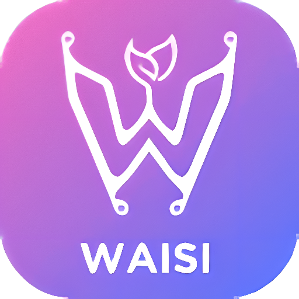
Indonesian Student Association at Madison (PERMIAS)
Secretary
Proud to help representing organization from the place where I came from. Tasks include:
- Writing organization newsletters
- Writing meeting minutes
- Helping with events & other related needs
Jejakin Climate Defender
Participant
- Planting Mangroove Trees
- Discussing Ca
- Helping with events & other related needs